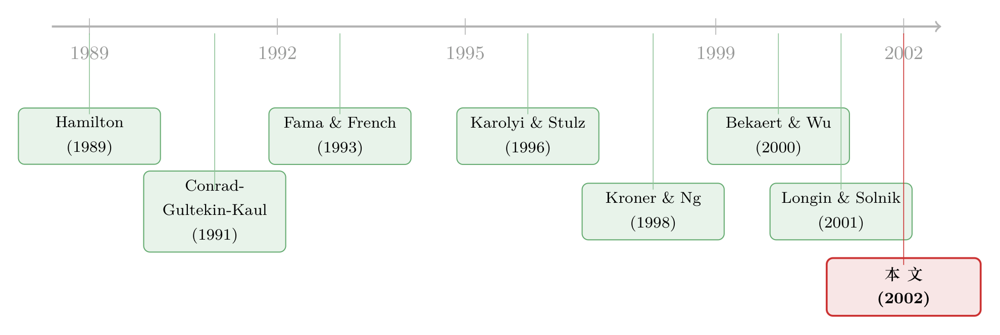

你以为分散了风险，可一到崩盘那天，它们全抱成了团
本文读的是 Ang & Chen (2002, Journal of Financial Economics)：美国股票与大盘的相关性，在「一起下跌」时远高于「一起上涨」时——条件在下行的相关性，比正态分布所隐含的高出 11.6%，而上行的相关性却与正态无异。两位作者造了一个不依赖任何模型的统计量 H 来度量、比较、检验这种不对称，并发现规模小、价值型、过去的输家、以及低 beta 的股票，下行抱团得更紧。
1 一个让人不安的引言
先想象一件最朴素的事。你按照教科书的教诲，把钱分散到一篮子股票里。分散的逻辑是什么？是相关性。两只股票的相关系数越低，组合的波动就越小，分散的好处就越大。于是你算出一个无条件相关系数（unconditional correlation），比如 ρ = 0.5，心里有了底，觉得「风险已经摊开了」。
可问题在于，相关系数是一个「平均」出来的数字。它把行情好的日子和行情坏的日子混在一起，算出一个折中的值。于是一个自然的问题是：在你最需要分散、也就是市场暴跌的那几天，这个 0.5 还作数吗？
Ang 和 Chen 的回答是：不作数，而且偏的方向恰恰是最坏的那个方向。他们发现，当一只股票和大盘同时下跌时，它们之间的相关性会显著升高；而当两者同时上涨时，相关性却没什么变化。换句话说，分散这把伞，偏偏在下雨那天会自动收起来。
这个现象本身，业界早有体感。真正难的，是怎样把它严谨地量出来——难就难在一个看似技术、实则致命的陷阱：条件偏误。
2 真正的拦路虎：条件偏误
这是全文最关键、也最容易被忽略的一步，所以我们慢一点讲。
直觉上，你会这样做：把所有「股票和大盘都跌了」的日子挑出来，单独算一个相关系数；再把「都涨了」的日子挑出来，算另一个；两者一比，不就看出不对称了吗？
错。哪怕真实世界严格服从一个对称的、相关性恒定的 双变量正态分布 (bivariate normal distribution)，你这样切出来的两个条件相关系数，也不等于那个无条件的 ρ。这就是 条件偏误 (conditioning bias)：当你按照变量自身的取值去筛样本（比如只看都跌的日子），你算出来的相关性会被这个筛选行为本身扭曲。
作者用闭式解把这件事钉死了。他们定义了一个 双重截断 (doubly truncated) 正态分布的条件相关性：
$$\rho^{\#}(h_1,h_2,k_1,k_2)=\mathrm{corr}\!\left(\tilde{x},\tilde{y}\mid h_1<\tilde{x} 这里 具体有多反直觉？作者给了一个数字。设无条件相关性 请盯住那个 这正是为什么不能「眼睛一闭、按涨跌切样本直接比」。Forbes & Rigobon (1999)、Boyer et al. (1999)、Stambaugh (1995) 都警告过：忽略条件偏误，会凭空「制造」出根本不存在的不对称。Ang 和 Chen 的全部功夫，就是先把正态分布「本该有」的偏误算干净，再看数据偏离了多少。 接着，一个自然的问题是：怎么把「偏离了多少」浓缩成一个可比较、可检验的数字？ 作者借用了 Longin & Solnik (2001) 的 超越相关性 (exceedance correlation) 这个工具。它的定义很干脆——给定一个门槛 $$\rho^c(\vartheta)=\begin{cases}\mathrm{corr}(\tilde{x},\tilde{y}\mid \tilde{x}>\vartheta,\;\tilde{y}>\vartheta;\;\rho) & \text{if } \vartheta\ge 0\\[4pt]\mathrm{corr}(\tilde{x},\tilde{y}\mid \tilde{x}<\vartheta,\;\tilde{y}<\vartheta;\;\rho) & \text{if } \vartheta\le 0\end{cases}$$ 把 落到数据上，结论很硬：把美国股票组合与大盘放在一起，下行（ （关于「与其盯着相关系数，不如直接去数一起暴跌的次数」这条思路，国际传染文献里有一个互补的做法，可参见《别再盯着相关系数了——用「一起暴跌」数出传染》；而把这把「不挑模型」的尺子进一步一般化的后续工作，则可参见《涨时各走各的，跌时一起跳水：给「不对称」一把无关模型的尺子》。） 光说「市场整体有不对称」还不够过瘾。Ang 和 Chen 真正出彩的一步，是把股票按特征分组，去问：哪一类股票的下行抱团最严重？ 他们用 CRSP 和 COMPUSTAT 的数据，按市值（规模）、账面市值比（价值）、过去 6 个月收益（动量）把股票分成五分位组合，再加上按 beta、协偏度、杠杆排序的组合，以及「规模 × beta」「规模 × 杠杆」的双重排序组合。结论可以归成几条： 换句话说，相关性不对称不是某一类「问题股」的专利，而是横跨规模、价值、动量、行业的系统性特征，并且它有自己的「面孔」——和我们熟悉的偏度、杠杆、beta 都对不上号。 同样是 Ang 和 Chen，两年后（与 Xing 合作）把这条线推向了定价：如果股票在下行时一起抱团，那么对下行风险更敏感的股票，是否该要求更高的预期收益？答案是肯定的，可参见《跌的时候才显形：被 CAPM 漏掉的那半个 beta》。本文是那条定价线的「现象学前传」。 那么，这种不对称到底「值多少钱」？作者在正文第 2 节用一个干净的资产配置模型，把它翻译成了真金白银。这一节虽小，却是全文的「钩子」，值得一步步看。 设定。 一个 常相对风险厌恶 (constant relative risk aversion, CRRA) 的投资者，把财富配置在两个风险资产（连续复利收益 $$\max_{a_1,a_2}\; \mathbb{E}\!\left[\frac{W^{\,1-\gamma}}{1-\gamma}\right]$$ 期末财富为 $$W=e^{r_f}+a_1\!\left(e^{x}-e^{r_f}\right)+a_2\!\left(e^{y}-e^{r_f}\right)$$ 参数取 真实世界其实是机制转换的。 投资者误以为收益服从正态，但真实分布是一个 机制转换 (regime-switching, RS) 模型： $$X=(x,y)'\sim N(\mu_{s_t},\Sigma_{s_t}),\qquad s_t\in\{1,2\}$$ 机制之间由 马尔可夫链 (Markov chain) 切换，转移概率为 $$\begin{pmatrix}P & 1-P\\ 1-Q & Q\end{pmatrix},\qquad P=\Pr(s_t=1\mid s_{t-1}=1),\; Q=\Pr(s_t=2\mid s_{t-1}=2)$$ 每个机制的协方差矩阵写成 $$\Sigma_i=\sigma_i^2\begin{pmatrix}1 & \rho_i\\ \rho_i & 1\end{pmatrix},\qquad i=1,2$$ 作者令 $$\mathrm{corr}(\tilde{x},\tilde{y}\mid \tilde{x}<-1,\;\tilde{y}<-1)=0.1789+H$$ 关键的一步在于：误判是有代价的。 因为 RS 模型在「高相关机制」里下行抱团更紧，相信正态分布的投资者会高估下行的分散好处，从而在该谨慎时反而超配了风险资产。作者用一个补偿量 $$\omega=100\times(\bar{\omega}_{s_t}-1),\qquad \bar{\omega}_{s_t}=\left(\frac{Q^{n}_{s_t}}{Q^{w}_{s_t}}\right)^{1/(1-\gamma)}$$ 其中 结果。 当 这就把整篇文章的动机闭合了：相关性不对称不是一个统计学玩具，它直接侵蚀了分散化和风险管理的根基。 最后一个自然的问题是：既然正态分布被否决，那现有的哪些模型能复现数据里的不对称？作者拉来四个候选： 用 把这篇论文放回它生长的土壤里看，会更清楚它的位置。 最早的一条根，是「股票收益与其波动率负相关」的长期文献，以及在 GARCH 框架内记录协方差不对称的工作——Conrad, Gultekin & Kaul (1991)、Kroner & Ng (1998) 用多元非对称 GARCH 刻画美国股票组合，Bekaert & Wu (2000) 则在日本股票上把它和杠杆效应、波动率反馈联系起来。这一支的共同特征是：不对称被关在某个特定 GARCH 设定里定义。  另一条根来自国际市场。Karolyi & Stulz (1996) 问「市场为什么一起动」，Longin & Solnik（1995, 2001）用 极值理论 (extreme value theory) 证明国际股市在大跌时相关性远高于大涨时——但他们停在「描述」，没给出针对特定分布的刻画。与此并行，方法论的警钟由 Forbes & Rigobon (1999)、Boyer et al. (1999) 敲响：当心条件偏误。而 Hamilton (1989) 的机制转换、Harvey & Siddique (2000) 的条件协偏度，则分别提供了「候选模型」与「需要被区分开的相邻概念」。 Ang & Chen (2002) 的位置，正在这几条线的交汇处：它把国际文献里的「下行相关性升高」搬回美国国内市场，用一个不依赖 GARCH、自带条件偏误修正的 (a) 几个可能的疑问 Q：「下行相关性高」会不会只是 GARCH 那种波动率聚集的副产品？ 不是。作者特意把第 5 节模型里的 Q：这和「负偏度」「协偏度」是不是一回事？ 不是。论文明确指出相关性不对称与 偏度、协偏度 在度量上是「fundamentally different」的，也不能被 beta 吸收。偏度刻画的是单一分布的形状，而 Q：那个反直觉的「低 beta 股票不对称更强」，会不会是规模没控干净？ 作者正是用「规模 × beta」双重排序来回应这个担忧的：控制规模之后，低 beta 组的相关性不对称仍然更高。当然，beta 与规模、价值高度纠缠，能否完全洗净仍可争论，但双重排序至少排除了「纯规模效应伪装成 beta 效应」这一最直接的混淆。 Q：11.6% 这个数字，到底是相对什么说的？ 是相对正态分布隐含的条件相关性而言。回忆那个 Q：H 统计量比直接看 Longin-Solnik 的超越相关性曲线，多了什么？ 多了「可检验」和「可比较」。Longin & Solnik 给出曲线和极值理论的极限行为，但没有针对特定分布的统计量。 Q：样本是美股，结论能外推到债券或新兴市场吗？ 论文本身只声称美国股票。它的贡献恰恰是说明「下行抱团不只是国际现象、在单一国家内部也很强」。债券、信用、跨资产能否复现，是开放问题——而这正引出了下面的研究方向。 (b) 几个可能的研究问题与提案 1. 把 H 统计量搬到公司债市场。
- 【经济故事】公司债在信用利差走阔时是否也「下行抱团」？如果是，那么基于评级、行业、流动性分组的债券组合，其下行相关性不对称的横截面，可能和股票截然不同——信用是带「违约同步」的，尾部联动也许更极端。
- 【可行性】中。TRACE 提供成交价，可构造日度/周度债券组合收益；难点在债券交易稀疏导致的非同步定价偏误，需要先处理 Scholes-Williams (1977) 式的滞后调整，再套用 2. 外资持有人是「抱团」的放大器还是缓冲器？
- 【经济故事】如果一类股票的边际投资者是会在危机中集体撤资的外资，那么它的下行相关性不对称应当更强。把「外资可投资度 (investability)」作为分组变量，看它是否预测更高的 3. 相关性不对称的「定价」缺口。
- 【经济故事】既然下行抱团有真金白银的效用代价（第 5 节的 120 bps），那么对「系统性下行相关性」暴露更高的股票，是否要求更高的预期收益？这是 downside beta 之外、更纯粹的「联动结构」定价问题。
- 【可行性】高。可构造个股对市场的条件下行相关性载荷，做 Fama-MacBeth 横截面回归；数据现成（CRSP），主要挑战是把「下行相关 beta」与已有的 downside risk、协偏度因子区分开。 4. 机制转换模型「差最后一口气」的那部分是什么？
- 【经济故事】作者承认没有模型能完全复现 这篇论文的贡献，我认为主要在方法而非现象本身——「下行抱团」业界早有体感，国际文献也记录过。它真正立得住的，是把一个一直被条件偏误污染的问题，用一个不挑模型、自带偏误修正、还能做假设检验的 对识别的担忧有两点。其一， 后续我最想看到的，是把这套尺子接到信用市场和外资持有人上：公司债在危机里的下行联动，是否比股票更极端？而当边际投资者是会集体撤离的外资时，尾部抱团会不会被系统性放大？这两个问题，都能把 Ang-Chen 这把「现象学的尺子」，量到更有政策含义的地方去。x̃ 和 ỹ 是标准化后的股票收益与市场收益。Rosenbaum (1961) 早就算过它的矩。关键的结论是：哪怕 ρ 固定不变，只要你改变截断点 (h, k)，这个条件相关性就会变。ρ = 0.5，在正态分布下，条件在「两者都比均值低 1 个标准差」时的相关性是：0.1789。一个无条件相关性高达 0.5 的正态分布，一旦你只看尾部，条件相关性会掉到 0.18 左右。原因很简单：正态分布的尾巴是「散」的、是平的，越往极端走，两个变量的联动越弱。所以——如果你天真地拿尾部的条件相关性去和 0.5 比，你会得出「下行相关性反而更低」的荒谬结论；反过来，如果数据里下行相关性明明该掉到 0.18，结果却没掉那么多，那才是真正的不对称信号。3 H 统计量：一把不挑模型的尺子
ϑ，只看两个变量同时超过（正向）或同时跌破（负向）这个门槛时的相关性：ρ^c(ϑ) 对着 ϑ 画出来，对正态分布而言，这条曲线是对称的、帐篷状（tent-shaped）的——左右两侧随 |ϑ| 增大而平滑趋零。于是检验不对称就变成了一件很视觉的事：把数据的超越相关性曲线，叠在正态分布的帐篷曲线上，看左半边（下行）是不是「拱」得比右半边（上行）高。H 统计量做的，就是把数据曲线与某个模型（基准用正态）所隐含曲线之间的距离，在一系列门槛 ϑ 上加权平方、再开方，汇总成一个标量。它的妙处有三：
H 不只是描述，还能给出拒绝「多元正态」原假设的 t 值。ϑ < 0）的条件相关性比正态分布隐含的平均高出 11.6%；而上行（ϑ > 0）那一侧，统计上与正态分布无法区分。无论用 日 (daily)、周 (weekly) 还是 月 (monthly) 频率，多元正态分布的原假设都被干净利落地拒绝。4 谁抱团抱得最紧？——横截面的故事
5 一个把代价算成钱的模型
x、y）和一个无风险资产之间，最大化期末效用：r_f = 0.05，风险厌恶 γ = 4，两资产同均值 μ = 0.07、同波动 σ = 0.15、无条件相关 ρ = 0.5。由于两资产对称，相信正态分布的投资者会等额持有，记这个组合权重为 aʷ。σ₁ = σ₂ = 0.15（关掉波动率的影响，专注相关性），并选 ρ₁ > ρ₂ 且 (ρ₁+ρ₂)/2 = ρ，使这个 RS 模型与正态分布有完全相同的前两阶无条件矩——同样的均值、波动、无条件相关。唯一的区别，是它在下行时的条件相关性会高出 H：ω 来度量这个损失——要让投资者心甘情愿地拿着次优的正态权重 aʷ 而非最优的 RS 权重 aⁿ，需要事前补偿他多少钱：Q^n 与 Q^w 分别是最优权重与次优权重下的间接 CRRA 效用。H = 0.10 时，在高相关机制（regime 1）里，投资者需要超过 120 个基点的补偿；在 regime 2 里也要约 100 个基点。对一个本就该被分散好处吸引的投资者来说，这笔因为「用错了分布」而付出的代价，一点都不小。6 哪种模型救得了场？
H 统计量当裁判，结论是：机制转换类模型表现最好——这与第 5 节模型里「真实世界是 RS」的假设遥相呼应。直觉也清楚：一个低概率、高相关的「危机机制」，天然能制造出「平时松、崩盘时紧」的尾部联动，这恰恰是 GARCH 那种「靠过去冲击平滑驱动」的机制很难一步到位的。但作者也很诚实：没有一个模型能完全解释数据里不对称的程度。这扇门，他们只推开了一条缝。7 文献脉络
H 统计量统一了度量与检验，并第一次系统地刻画了相关性不对称的横截面决定因素（规模、价值、动量、beta、杠杆）。评论与延伸（Q&A + 研究方向）
σ₁ = σ₂ 设成相等，剥离掉波动率渠道，仅靠 ρ₁ ≠ ρ₂ 就造出了不对称；实证上他们也发现非对称 GARCH 模型并不能很好复现 H，反倒是机制转换模型更贴。所以相关性不对称是一个独立于「波动率不对称」的现象。
H 刻画的是两个变量在尾部的联动结构，二者可以彼此独立地存在。
0.1789：正态分布在尾部本来就该「相关性掉下去」，数据相对这个基准平均高出 11.6%。它衡量的不是「比无条件相关高 11.6%」，而是「比正态该有的尾部相关高 11.6%」——这正是先修正条件偏误的意义所在。
H 把曲线与任意基准之间的距离汇总成一个带渐近分布的标量，于是你既能拒绝正态原假设，又能拿同一把尺子去给 GARCH、跳跃、RS 等模型排座次。
H 框架。H，可以把 Ang-Chen 的横截面故事接到资本流动上。
- 【可行性】中。需要个股层面的外资持股或可投资度数据（如新兴市场的 investable 标记），识别上可借助指数纳入这类准外生事件来缓解内生性。H。残差里缺的，可能是「相关性本身的时变跳跃」或「机制数大于 2」。把 RS 模型扩展到时变转移概率（à la Gray, 1996）或三机制，看 H 的拟合缺口能补多少。
- 【可行性】中。模型估计成熟，但高维 RS-GARCH 的似然面崎岖、识别困难，需要谨慎的数值优化与样本外检验。我的判断
H 统计量给「干净化」了，并第一次系统地画出了相关性不对称的横截面地图。「低 beta 抱团更紧」「杠杆无关」这两条，尤其值得后人反复咀嚼，因为它们直接反驳了「波动率杠杆效应」这套主流叙事。H 统计量在尾部的估计依赖于极少的极端观测，其有限样本性质和对门槛 ϑ 选择的敏感性，论文虽用全样本时间序列缓解，但稳健性边界仍值得追问。其二，规模、价值、动量、beta、杠杆这些特征彼此高度纠缠，双重排序能控住一部分，却难说把所有混淆都洗净了——「低 beta」效应在多大程度上是别的特征的影子，仍是悬而未决的。参考文献